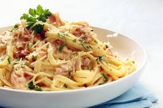
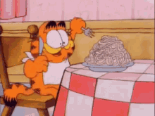
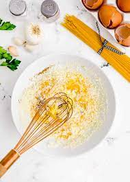
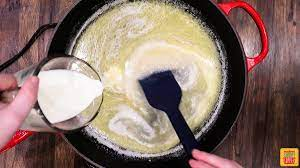
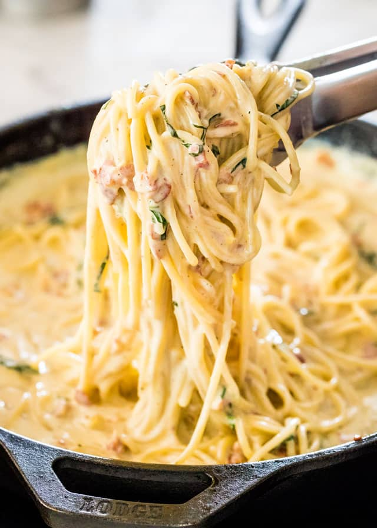
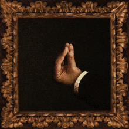

>
Bacon Cabonara
It's Time for Some Sweet Creamy Bacon Cabonara!

This is a tried, tested, and true recipe that makes for an easy and delicious meal all year round!
It's the meal to impress your friends, make your mama proud, and win the love of a fair maiden!
But enough banter. Here's what you need:
- Penne or Angel's hair pasta
- 1b cooked bacon
- 1/2 cup of butter
- 1/2 cup of cream
- 1 egg
- Grated parmesan
- salt and pepper to taste
- Parsley to garnish, if you want
No time for some sob story about where this recipe comes from. Here's what you do:

- In a bowl, whisk together the egg, parmesan, salt, and pepper.

- Add your pasta to a pot of boiling water for 7-10 minutes. Check for soft consistency!
- Mix your butter and cream in a pan on low heat and mix while simmering

- Once the butter and cream have thickened up, so that your spoon remains covered in sauce, add the pasta
- Add the egg parmesan mix and cooked bacon
- Stir your mixture until a nice thick and cream consistency. Add a little water if you need to thin it out

- Let it sit for 2-3 minutes for the flavour to settle in
And now it's time to enjoy. Be sure to make the appropriate gestures beforehand!
